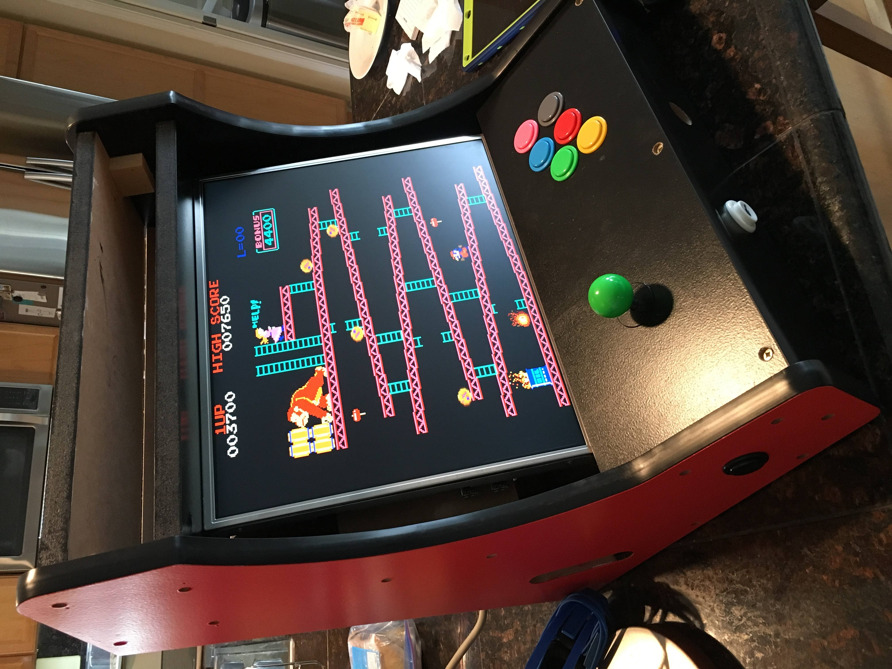
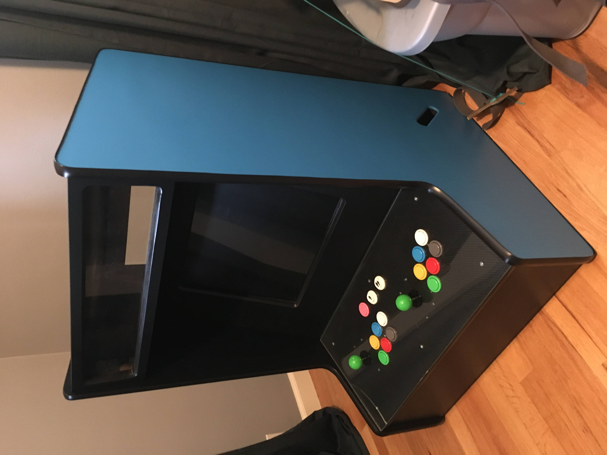
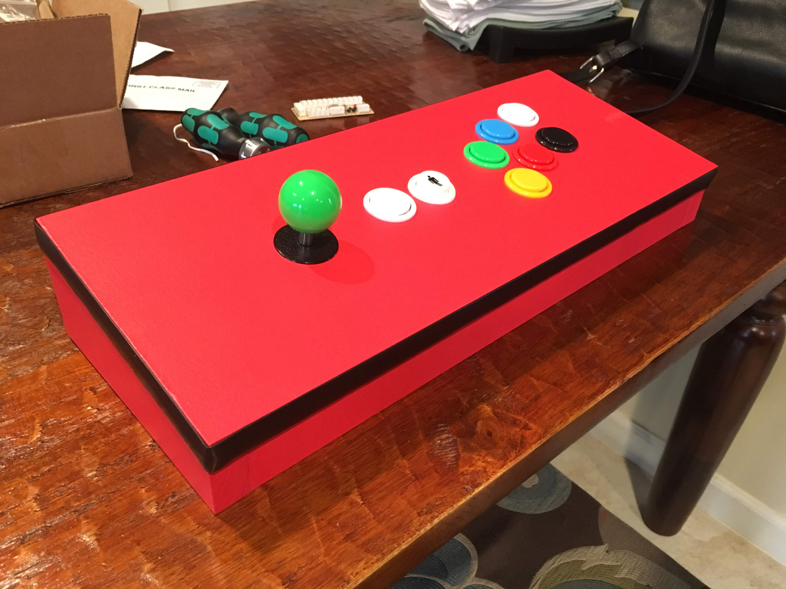
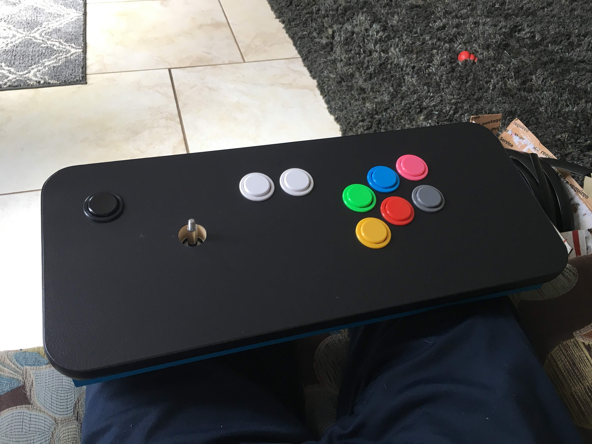
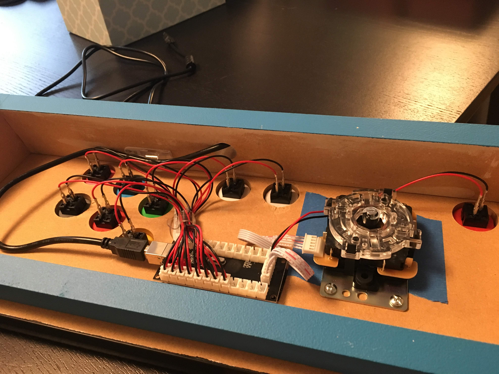

I have been taking on more projects that involve wood, and I have found it very challenging and rewarding. I made the bartop arcade cabinets for myself and my co-workers, and they've been a big hit. I went into the first build (the red and black bartop below) with the notion that it would be fun to share with my co-workers the mutual love for arcades since past. I was also keen to learn Donkey Kong (1981 original), having loved the 2007 documentary The King of Kong, and hearing of its brutal nature. What I did not anticipate is how fierce the competition would be vying for high scores, nor the titles these battles took place. I focused on Donkey Kong early in the cabinet's life, and had little competition there. Ms Pacman, while loved by all, didn't seem to grab anyone. The title that sparked the most play and competition was, surprisinly, Rygar. I played Rygar on the NES as a young kid, but the NES version is nothing like the arcade version from which it was derived. My fellow team mates would not stop with this game. If it were not for the COVID quarantining effort, they would still be attacking the high score.



The "fight stick" consoles were made to be a convenient/compact joystick experience. I made the red one for myself and the blue/black for a co-worker.

